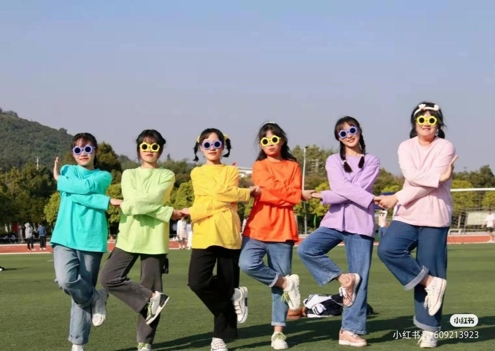

时间：
2月8日-2月15日可外出时间
负责人：
孙宁玥
规则
（1）总人数3人及以上；
（2）在指定时间之前前往长沙景点并在截止时间前将合影发至孙宁玥微信；
（3）以轻松娱乐促进友谊为目的，不设置报名人数上限，鼓励所有人积极参与；
（4）在景点处和小伙伴摆出如下指定动作合影。
奖励
first:前五组即可每人获得附有白队长沙美食推荐（限定版）长沙明信片一张（先到先得）并且将团结福揽入自己的福袋之中；
second:如果小伙伴们团建的目的地是橘子洲头或岳麓山，即可同时获得团结福和健康福。